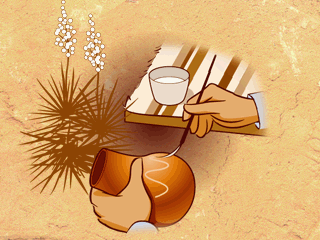

Now the pot is ready for painting.
Brushes are made from a dried YUCCA leaf that has been chewed down to a few fibers for bristles.
Designs are carefully painted on by hand.

|  |
Now the pot is ready for painting.Brushes are made from a dried YUCCA leaf that has been chewed down to a few fibers for bristles.Designs are carefully painted on by hand. |
|